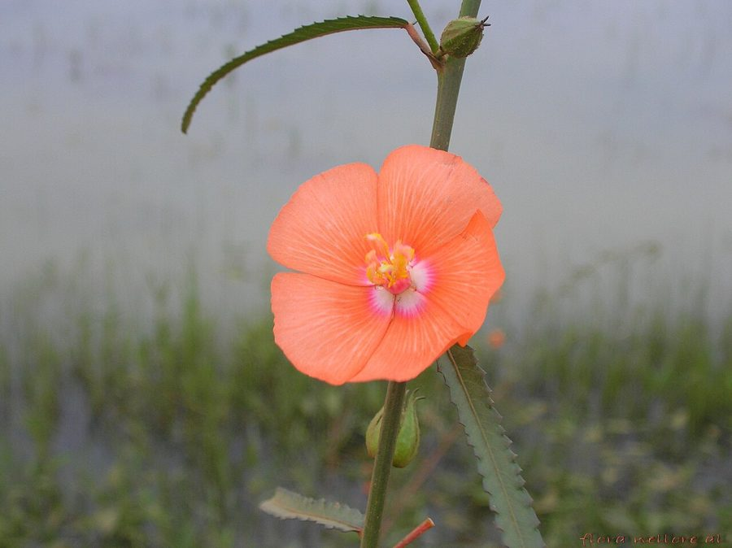

दुपहरियाScarlet Mallow
Pentapetes phoenicea · Malvaceae · FLR-0228

- Scientific name वैज्ञानिक नाम
- Pentapetes phoenicea Rottb.
- Family कुल
- Malvaceae
- Hindi हिंदी
- दुपहरिया
- Local names स्थानीय नाम
- dopahariya, dupahariya, dupahri, scarlet mallow
- Status here यहाँ की स्थिति
- native
- Movement आवागमन
- Resident, here all year
- Known from कहाँ दर्ज
- Others have published records from the wider Awadh–Purvanchal plain, none yet from Basti–Ayodhya अवध–पूर्वांचल से दूसरों के प्रकाशित अभिलेख, बस्ती–अयोध्या से अभी नहीं
- IUCN IUCN
- not evaluated
- Review समीक्षा
- audited and independently read
When to look कब देखें
Expected mainly in June, July, August, September, October, November. मुख्यतः जून, जुलाई, अगस्त, सितंबर, अक्टूबर, नवंबर में अपेक्षित।
Tell it apart from इनसे अलग पहचानें
दुपहरिया / Scarlet Mallow
Pentapetes phoenicea Rottb. — Malvaceae
दुपहरिया (दोपहरिया) — भारतीय गर्म प्रदेशों का एक सुंदर और दुर्लभ वर्षीय पौधा, जो बस्ती की नमी वाली जमीनों, खेत की नालियों और दलदली कगारों पर पाया जाता है। इसका नाम दोपहर में खिलने वाले फूलों से आया है। इसके पाँच पँखुड़ी वाले फूल गहरे लाल-नारंगी रंग के होते हैं, जो सूरज डूबने से पहले बंद हो जाते हैं। बीजों को पक्षी फैलाते हैं। यह पौधा बरसात के मैदानों में एक प्राकृतिक संकेतक है।
Quick Identification त्वरित पहचान
| Feature | Description |
|---|---|
| Form | Erect annual herb, 50–120 cm tall, soft-hairy, unbranched or little-branched |
| Leaves | Elongate ovate, 8–15 cm long, soft, hairy, with wavy margins, slightly wrinkled |
| Flowers | Brilliant scarlet-red, five petals, 3–4 cm diameter, solitary in leaf axils |
| Fruit | A 5-celled capsule, pubescent, 1.5–2 cm, opening by five valves |
| Stem | Hairy, terete, reddish or greenish |
Field tip: An upright herb with large, soft leaves found only in wet, waterlogged areas. The scarlet flowers are unmistakable and close by evening. Not easily confused with other species.
हिंदी — कैसे पहचानें: नमी वाली जमीन पर, बड़ी पत्तियाँ, गहरे लाल-नारंगी फूल, दोपहर में खिले, शाम को बंद हों।
Morphology आकारिकी
Biometrics (specimens from wetland margins, Basti):
| Feature | Measurement |
|---|---|
| Plant height | 50–120 cm |
| Leaf length | 8–15 cm |
| Flower diameter | 3–4 cm |
| Petal length | 15–20 mm |
| Capsule length | 15–20 mm |
Stem and bark: Hairy, terete, greenish or purplish. Base woody only in very old plants.
Leaves: Alternate, elongate-ovate, 8–15 cm long, soft, densely hairy on both surfaces, margins wavy, petioles 2–4 cm.
Flowers: Solitary in leaf axils, large and showy, brilliant scarlet-red, opening in morning and closing by evening (ephemeral), five petals with crinkled texture.
Fruit: A 5-celled capsule, pubescent, 15–20 mm long, opening by five valves to release numerous seeds.
Behaviour & Ecology व्यवहार और पारिस्थितिकता
A moisture-loving annual of the Indo-Gangetic wetlands, restricted to waterlogged and marshy soils. It is a specialist in wetland ecology and is often used as a natural indicator of water-retaining soils. The ephemeral flowers suggest pollination by morning-active bees and flies. The fruit is eaten by water birds, which disperse the seeds.
Life Cycle / Phenology जीवन चक्र
| Month / Season | Event |
|---|---|
| May–June | Seed germination in waterlogged soils |
| July–August | Rapid growth during monsoon |
| August–September | Flowering begins |
| September–October | Peak flowering and fruit maturation |
| October–November | Seed dispersal and plant senescence |
One season.
हिंदी: जून में अंकुरण, अगस्त से फूल, अक्टूबर तक बीज। नमी की जरूरत है।
Associated Species / Interactions संबंधित प्रजातियाँ
- Pollinators: Morning bees and flies attracted to the large scarlet flowers.
- Seed dispersal: Water birds eat and disperse seeds.
- Wetland associates: Found with water-loving plants like Marsh Barbel and sedges.
Pests and Diseases कीट और रोग
- Leaf-eating caterpillars feed on young leaves.
- Rust fungi occasionally appear in humid conditions.
Agricultural / Human Relevance कृषि प्रासंगिकता
Today: Not a significant crop pest because it is restricted to wetlands unsuitable for cultivation. It is valued locally as an ornamental in some gardens due to its striking red flowers. Wetland management that retains standing water preserves populations.
Ecological value: As a wetland indicator and a source of food for water birds, it contributes to wetland biodiversity.
हिंदी: खेतों में समस्या नहीं। दलदल में सुंदर फूल के लिए जाना जाता है।
Expected Locally स्थानीय रूप से अपेक्षित
Not a field record. Written from published accounts for eastern Uttar Pradesh. No confirmed local sighting yet — if you have seen it, that is what the atlas needs.
अभी तक स्थानीय पुष्टि नहीं। यह विवरण प्रकाशित स्रोतों से है, किसी अवलोकन से नहीं।
Expected in waterlogged margins of wetlands, particularly in Samda Jheel and similar systems in Ayodhya and Basti districts during the monsoon and post-monsoon. GBIF holds published records from the wider Awadh–Purvanchal plain.
Distribution वितरण
Global range: Native to tropical Asia, from India to Southeast Asia.
In India: Warm regions, particularly Indo-Gangetic wetlands.
In Uttar Pradesh: Scattered in wetland areas.
In Basti district / eastern UP: Wetland specialist; found in marshy margins and ditches with standing water.
Research Questions शोध प्रश्न
- How does the flower open at dawn and close at dusk? What triggers these movements?
- Which birds eat the seed, and how far do they carry them before defecating?
- क्या दुपहरिया के सूखे बीजों को पानी में रखने से अंकुरण की दर बढ़ती है? — Simple germination test.
- In which wetlands of Basti and Ayodhya is this species still present, and what is the trend?
- Can children grow it in a pot with waterlogged soil and observe the flower opening and closing? — Daily observation study.
Similar Species मिलती-जुलती प्रजातियाँ
| Species | Key Difference | हिंदी | |
|---|---|---|---|
| *[[hibiscus\ | Hibiscus]] sabdariffa* (Roselle) | Larger, three-parted calyx; fruit different; cultivated crop, not wild | भिंडी जैसा कप, बड़ा पौधा |
| [[country_mallow\ | Country Mallow]] (Sida cordifolia) | Heart-shaped leaves, much smaller yellow flowers, not aquatic | बला — पीले फूल, छोटे |
Field rule: Scarlet Mallow is unmistakable: large soft herb with scarlet five-petaled flowers, found only in wet ground. No other Malvaceae in eastern UP has such brilliant red flowers.
Taxonomy & Classification वर्गीकरण
Original description. Described by Georg Friedrich Wilhelm Rottboell in 1776 in Plantae Rariores as Pentapetes phoenicea. Type locality is India.
Subspecies. Monotypic.
Family and order placement. Order Malvales, family Malvaceae, genus Pentapetes (monotypic for India).
Phylogenetic notes. Pentapetes is distantly related to Hibiscus and other large-flowered Malvaceae.
IUCN status rationale. Not evaluated. Restricted to wetland habitats; may be declining with wetland loss.
Photo Gallery फोटो गैलरी
No photos yet — add field photos to media/species/scarlet_mallow/ and run node scripts/sync_photos.js.
Wanted photos:
- Whole plant with scarlet flowers
- Single flower showing five petals
- Fruit and seed capsule
- Plant in wetland habitat
References संदर्भ
- Rottboell, G.F.W. (1776). Plantae Rariores. Francisci Ant. König, Hauniae.
- Hooker, J.D. (1875). Flora of British India, Vol. 1.
- Duthie, J.F. (1903). Flora of the Upper Gangetic Plain.
- Botanical Survey of India. State Flora Series: Flora of Uttar Pradesh. BSI, Kolkata.
- Champion, H.G. & Seth, S.K. (1968). A Revised Survey of the Forest Types of India. Government Printing, Delhi.
- GBIF Occurrence Data — Pentapetes phoenicea (2026).
Source file: species/flora/weeds/scarlet_mallow.md